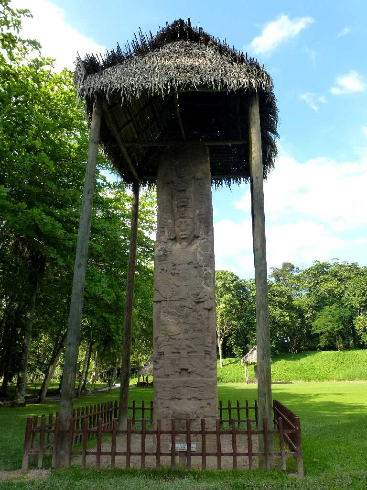
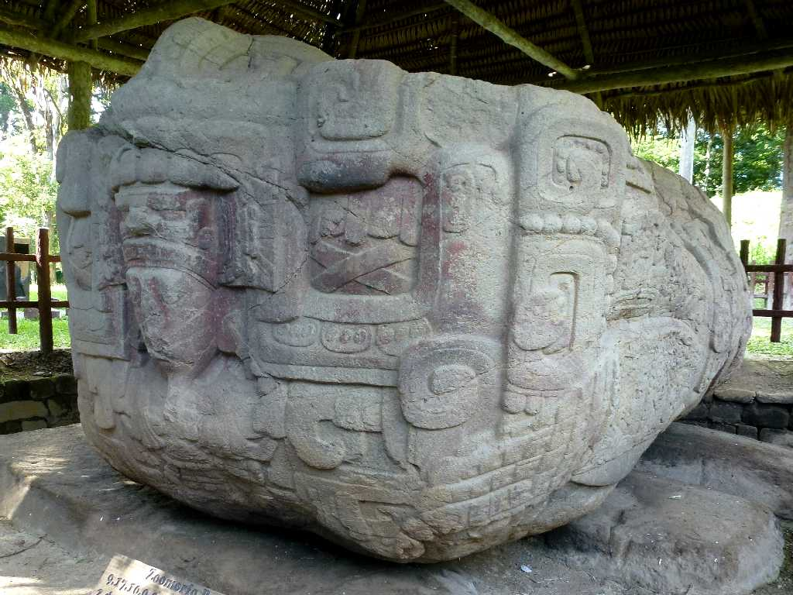
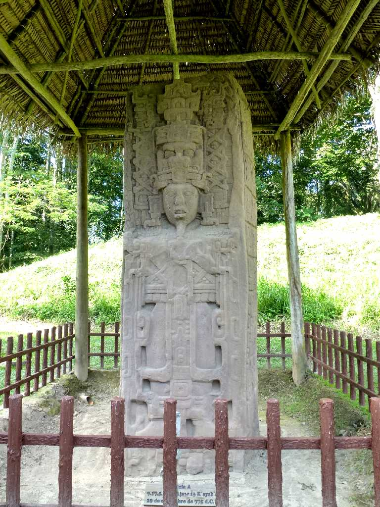
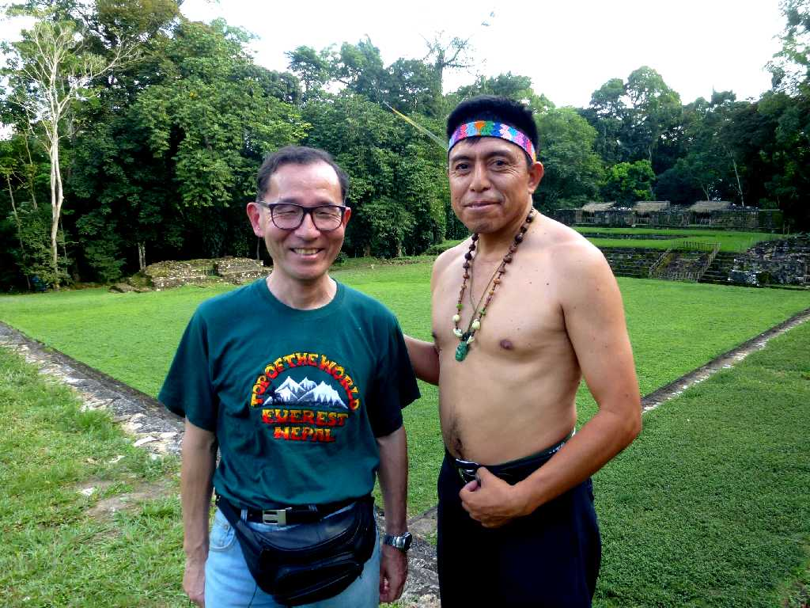

Stela E Quirigua
高さ１０.6ｍ幅３.4ｍ厚さ１.2ｍの巨大な石碑でキニチ・ヤシュ・クアク・モナル王の治世が記録されている

Zoomorfo B Quirigua
高さ６.5ｍ幅３.5ｍ厚さ２.2ｍの巨大な石碑で人間が神々や動物と舞っている様子を刻んだ動物型祭壇

Stela A Quirigua
王が戦場で敵を倒す様子や戦利品として財宝や捕虜を受ける様子が描かれており他国を征服し戦勝を収めた高さ４.5ｍ幅２.5ｍ厚さ１.2ｍの石碑

January 29 2013 Quirigual